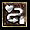
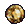

將劍類武器注入魔法，任何劍類武器都適用。( 增加1-2個凹槽 )
物品方塊公式
|
 |
3
個完美地骷髏+ 1 個稀有物品（黃色）+ 喬丹之石 =
在稀有物品（黃色）上增加一個凹槽 在稀有物品（黃色）上增加一個凹槽 |
| 1
個完美地骷髏 + 1 個稀有物品（黃色）+ 喬丹之石 = 1
個新的同樣類型且高品質的稀有物品（黃色） 這個公式可以擁有更高品質的稀有物品（黃色） 。 |
| 6
個完美地骷髏 + 1 個稀有物品（黃色）= 1
個同樣類型且隨機的低品質稀有物品（黃色） 這個公式無法使用在多於6格的物品上。 |
| 4瓶治療藥劑(任何形式) + 紅寶石 (任何形式) + 魔法/成套/稀有 劍類武器(任何形式) = 一把同類型的劍類武器擁有吸血屬性 |
| 3個戒子
= 1個隨機的護身符(項鍊) 最高等級=[(3*角色等級)/4]+3。但是一個 +2 點技能的護身符(項鍊)需要等級 90，也就是說， 無法利用這個公式創造一個 +2 點技能的護身符(項鍊) 。 |
| 3個護身符(項鍊)
= 1個隨機的戒子 最高等級=[(3*角色等級)/4]+3。 |
|
3瓶治療藥劑 + 3個法力藥劑 + 1個碎裂的寶石 = 1個回復藥劑 |
|
3瓶治療藥劑 + 3個法力藥劑 + 1個寶石 = 1個全面回復藥劑 |
| 3瓶小的回復藥劑
= 1個全面回復藥劑 |
| 3個同類型同等級的寶石
(低於完美地) = 1個同類型高一等級的寶石 |
|
|
3
個碎裂的寶石 + 1把劍類武器 (任何形式) = 1
把有魔法屬性同類型的劍 將劍類武器注入魔法，任何劍類武器都適用。( 增加1-2個凹槽 ) |
|
|
3
個碎裂的寶石 + 1把魔法武器 (任何形式) = 1 把有魔法屬性同類型的武器 將武器注入魔法，ilvl=25 ( 增加1-2個凹槽 ) |
|
 |
3
個無瑕疵的寶石 + 1把魔法武器 (任何形式) = 1 把有魔法屬性同類型的武器 將武器注入魔法，ilvl=30 ( 增加1-2個凹槽 ) |
 |
3
個標準的寶石 + 1把有個1凹槽的魔法武器 (任何形式) = 1 把有魔法屬性同類型的武器 將武器注入魔法，ilvl=30 ( 增加1-2個凹槽 ) |
| 2
捆十字弓彈 = 1捆箭矢 數量隨機。 |
| 2
捆箭矢= 1捆十字弓彈 數量隨機。 |
| 1支矛
+ 1捆弓箭 = 1捆標槍 |
| 1把斧頭
+ 1把匕首(短劍)= 飛斧 數量隨機。 |
| 3個完美寶石(任何類型)
+ 1個魔法物品 = 1個同類型且新的隨機魔法物品 最高等級=100，你可以利用這個公式創造一個+2點技能的護身符(項鍊)， 但是等級低於84的角色是創造不出來的。 |
| 扼殺氣體藥劑
+ 任何類型的治療藥劑 = 1個解毒藥劑 |
| 6
個完美的寶石 (每種1個) + 1 項鍊 (任何等級) =
多彩的項鍊 抗性15%~30%(隨機) |
| 1個完美
的綠寶石+
1個戒指 + 1 瓶解毒藥劑 = 鉻綠戒指 抗性20%~27%(隨機) |
| 1個完美
的紅寶石
+ 1個戒指 + 1 瓶爆炸藥劑 = 石榴石戒指 抗性20%~27%(隨機) |
| 1個完美
的黃寶石
+ 1個戒指 + 1 瓶回復藥劑 = 珊瑚戒指 抗性20%~27%(隨機) |
| 1個完美
的藍寶石
+ 1個戒指 + 1 瓶溶解藥劑 = 鈷石戒指 抗性20%~27%(隨機) |
| 小盾
( 具有魔法屬性或較高級的 ) + 狼牙棒 + 2 骷髏頭 (任何等級)
= 小尖刺盾牌 |
| 鑽石
(任何等級) + 法杖 (任意類型和等級) + 波形劍 (任意類型和等級)
+ 腰帶 (任意類型和等級) = 長柄斧 |
| 維特之腿+
一本傳送門之書 =隱藏乳牛關卡 PS:只能在ACT1城鎮開啟 要殺死巴爾才能進入此關卡 |